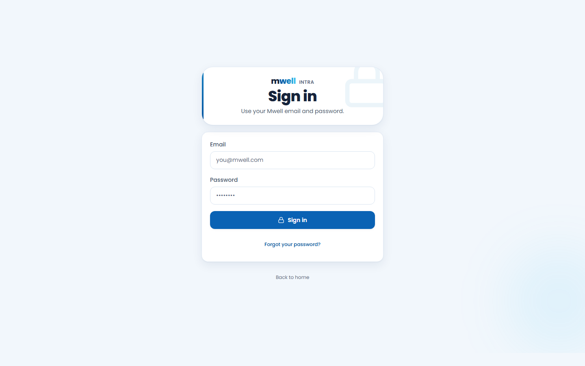
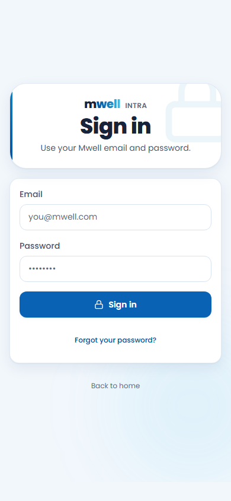
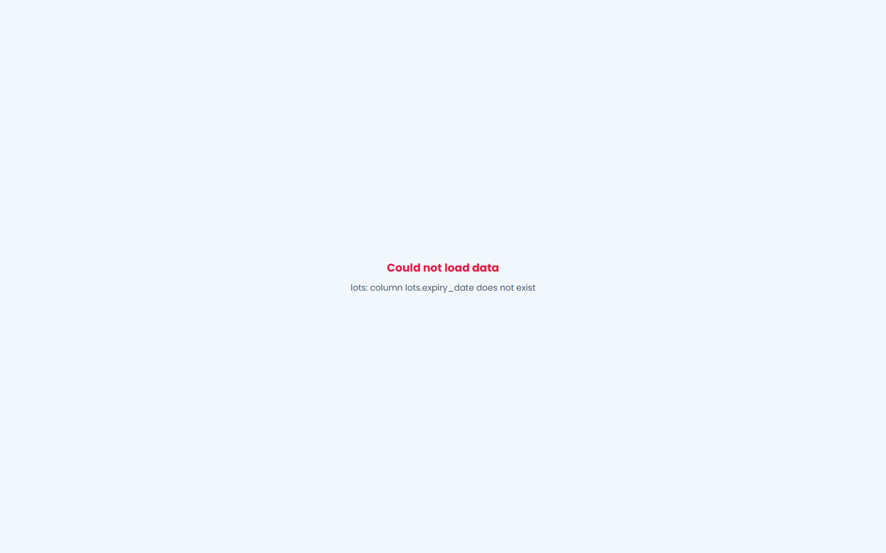
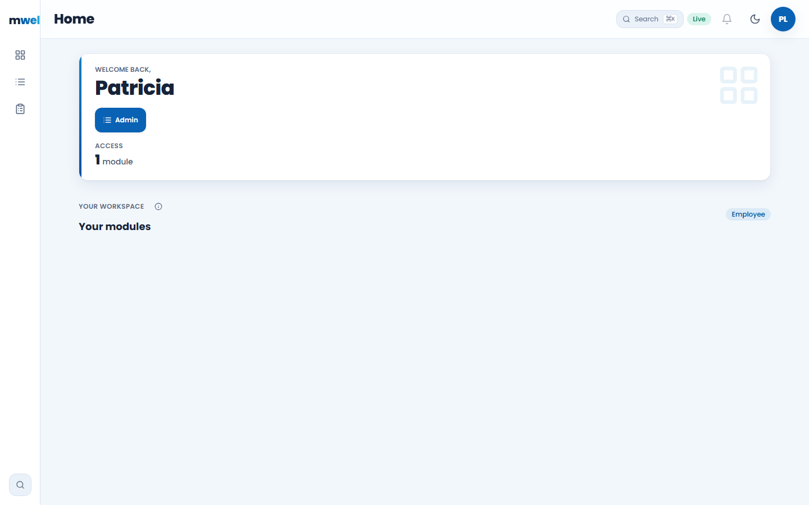
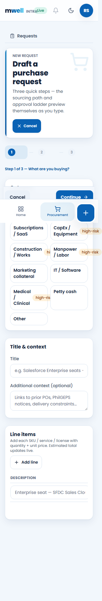
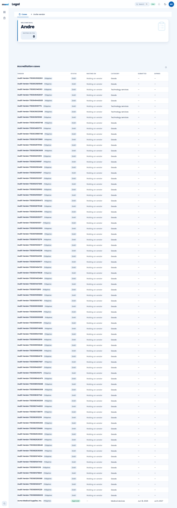
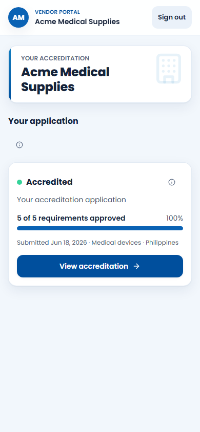

Mwell Intra
A role-scoped workspace for vendor accreditation, procurement, warehouse operations, finance handoff, and administration.
Sign in
- Open the live app.
- Enter your assigned Mwell account.
- Select Sign in once and wait for Home.
- Use only the modules shown for your role.


Procurement
Requester
- Open Procurement and select New request.
- Choose the request type and enter title, context, and line items.
- Complete justification and save the draft.
- Review amount, sourcing route, evidence, and activity.
At 320px the Continue action is blocked by fixed mobile controls. Use a wider phone or desktop.
Officer, Approver, Finance
Validate evidence and routing, act only on assigned approvals, and preserve requester/approver separation. Submission remains blocked until an active department DOA exists.
Vendor accreditation
- Open Cases and select the vendor.
- Review checklist, evidence, and instrument status.
- Record corrections or an evidence-supported disposition.
- Confirm delivery before telling a vendor that an invitation was sent.
Invitation delivery currently returns 503 because the server secret is not configured in Vercel.
Vendor Portal
- Open your accreditation record.
- Complete all required profile fields.
- Upload current, readable evidence.
- Resolve correction requests and submit when complete.
Verified: vendors are restricted to their own organization and the accredited status view works on mobile.
Warehouse
Receiving, storage/bins, inventory, allocations, returns, counts, events, pricing, finance, and BI currently fail against the live schema. Do not record production transactions until the database contract is repaired and recertified.

Users, roles, and DOA
Grant the minimum scoped role. Platform administration must not imply operational approval authority.
Department DOA
- Create a matrix for one department.
- Add amount bands and named approvers.
- Save and validate the draft.
- Activate deliberately; the prior department version becomes superseded.
No active department matrices exist in production yet.
Support and recovery
Capture time, role, route, transaction ID, viewport, and visible message. Never include passwords, tokens, or private document contents. Search before retrying a write. Escalate login/provisioning to Platform Admin, Legal delivery to Legal/Platform, and warehouse data errors to Engineering/Database.
Screenshot gallery



